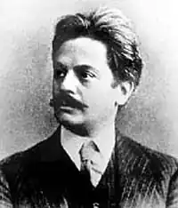

10 грудня 1933 р. о 7 годині 25 хвилин у Празі упокоївся 67-річний письменник і меценат, за фахом правник Володимир Леонтович.
Він побачив світ на Полтавщині 5 серпня 1866 р. Нащадок родовитої козацької шляхти по батькові, син поміщика, штаб-ротмістра Охтирського гусарського полку. За материнською лінією належав до французького роду Альбрандів, що оселився в Україні за часів французької революції.
Закінчив гімназію, потім юридичний факультет Московського університету (1884–1888). У Москві він гостро усвідомив різницю між росіянами й українцями, серцем відчув свою українськість. У студентські роки, захопившись археологією, Володимир разом із старшим братом здійснив розкопки трьох курганів у Старобільському повіті на Харківщині. Колекцію знахідок доби бронзи, здобутих під час цих робіт, брати подарували Лубенському музею К. М. Скаржинської (зараз вона зберігається у Полтавському краєзнавчому музеї). За дисертацію на тему "Історія землеволодіння в Україні від повстання Богдана Хмельницького до введення кріпацтва царицею Катериною ІІ", дістав науковий ступінь кандидата права. Зверніть увагу: студент Леонтович вживає слово Україна, а не Малоросія, як це було усталено в Російській імперії. Влітку 1891 р. разом із друзями В. Леонтович відвідав Тарасову могилу у Каневі, де поклалися: "Не ми будемо, коли Вкраїні волі й долі не здобудемо!". Так виникла таємна політична організація спротиву українців тогочасній колоніальній політиці царату. Ідеологом і провідником цього об'єднання став Микола Міхновський (нащадок Павла Полуботка), який рішуче відкидав "братання" і "дружбу" поневолювачів із поневоленими. Згодом В. Леонтович став одним із 17-ти членів Старої Громади, які склали присягу "любити Україну до глибини власної кишені". Володимир Леонтович був постійним членом фонду В. Симиренка. Знаючи, що до рук Леонтовича гроші не пристануть, Василь Федорович передавав свої пожертви на різні українські потреби через родича (В. Симиренко – чоловік Софії Альбранд, тітки Володимира). Володимир Леонтович добре господарював, як поміщик, організував з братами акціонерне товариство, яке збудувало 1909 р. цукроварню в Оріхівщині. В. М. Леонтович займався сільським господарством, культурною діяльністю, був активним діячем земських установ на Полтавщині. Свої доходи він віддавав на видання першої щоденної української газети "Громадська думка", яка згодом прибрала назву "Рада", журналів "Киевская старина" і "Літературно-науковий вісник", фінансував і редагував часопис "Нова громада". Володимир Миколайович виступав на підтримку української преси і школи. В Оріхівці він збудував двокласну українську школу, утримував учителя, бібліотеки. У 1911–1919 рр. очолював "Товариство підмоги українській літературі, науці й штуці". Після революції 1917 року його обрали до Центральної Ради. А 17 березня 1917-го під час стотисячної демонстрації в Києві ніс національний синьо-жовтий прапор на чолі колони товариства "Просвіта". У 1918 р. В. Леонтович обіймав пост міністра земельних справ в останньому кабінеті Ф. Лизогуба. З ім'ям В. Леонтовича та Є. Чикаленка пов'язаний проект земельного закону, згодом оцінений як один з найдемократичніших у світі. Він склав програму, 2яку визнавав потрібною, щоб врятувати рідний край од дальшого зруйнування: зовні — од большовиків, дома — од заколотів та розрухів". У 1919 р. емігрував до Болгарії, Сербії, Німеччини, згодом у Чехії (Празі) очолював Товариство ім. Св. Володимира, співробітничав у часописі "Тризуб". У тридцять третьому почув про страшенний голод в Україні, і не витримало серце колишнього хлібороба та міністра сільського господарства: 10 грудня його не стало. Поховали Володимира Леонтовича у Празі, у 1944-му поряд із ним упокоївся Олександр Олесь... Онуки Володимира Леонтовича — Олена Леонтович, Юлія Освальд з Німеччини, Ольга Вебб і Пармен Леонтович з Великої Британії, Марія Менлі зі Сполучених Штатів Америки, власним коштом видали чотиритомник творів діда.